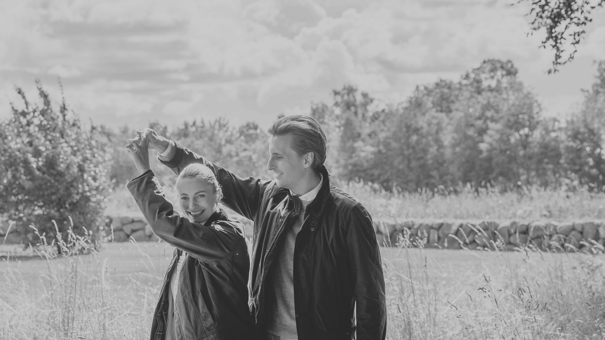
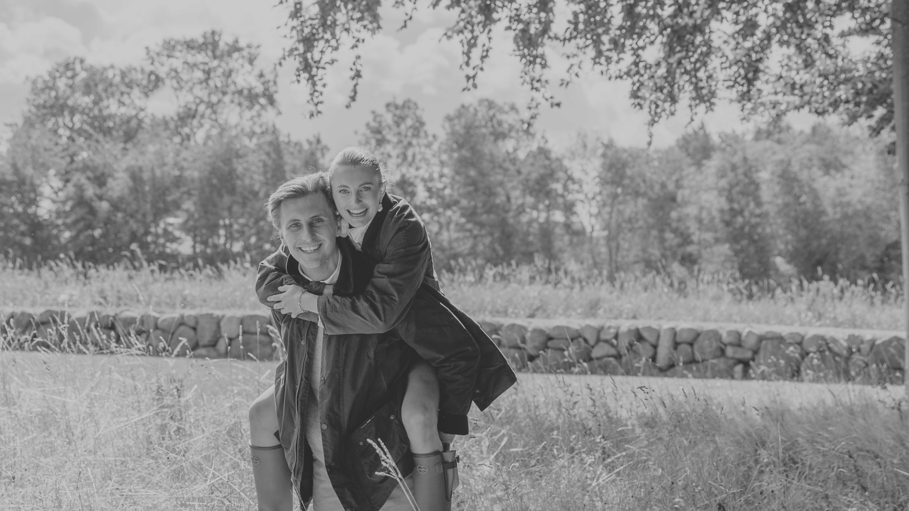

12 år senere
Det begyndte i Skagen i sommeren 2013, hvor vi mødte hinanden for første gang. En tilfældig berøring på skulderen blev starten på noget, ingen af os helt forstod, men som føltes rigtigt fra første øjeblik. Allerede den første aften opstod der en lethed mellem os, som om verden stod stille et kort sekund, og et første kys blev givet uden tøven. Sommeren fortsatte med lange aftener, hvor tiden forsvandt, og alt føltes enkelt og uundgåeligt rigtigt.
Da hverdagen kom, fandt vi hinanden på ny i det stille og velkendte. Vi voksede sammen, formede hinanden og fandt ro i det, vi havde. Uanset hvor livet tog os hen hver for sig, vendte vi altid tilbage til det samme svar. Det var os to.
I 2020 flyttede vi sammen på Ordrupvej, hvor kærligheden for alvor fik et hjem, og i 2021 videre til Callisensvej, hvor livet voksede stille og sikkert mellem os.
I juli 2024 kom den største gave. En stille besked, der ændrede alt. Vi skulle være tre. Et lille liv var på vej, og alt det vi havde bygget sammen, fik en endnu dybere betydning. I de måneder der fulgte, voksede forventning og kærlighed i takt.
Den 30. august 2024, en varm sommeraften i Dyrehaven, blev et af vores vigtigste kapitler skrevet. Græsset var blødt, pizzaen enkel, og stilhed omkring os gav ro. Her gik Victor på knæ og friede, ikke som et spørgsmål om fremtiden, men som en bekræftelse på alt det, vi allerede er for hinanden.
Den 19. marts 2025 blev trekløveren fuldendt, da Josephine Emilie kom til verden. Med hendes ankomst forandredes alt, og en kærlighed, der i forvejen var stor, voksede sig endnu større, sammen med en stor taknemmelighed over at blive forældre.
Nu har vi sammen købt en lejlighed, i Charlottenlund, som vil skabe rammerne på vores liv som ægtepar.
Og den 22. august 2026 siger vi ja til hinanden. Et ja til hinanden, til familien vi har skabt, og til de år der venter foran os.
Med det øjeblik fuldendes en rejse, der begyndte i Skagen for 12 år siden, og som siden kun har vokset sig dybere og helt uundgåelig. En kærlighed der ikke længere skal findes, men bare leves videre i.
